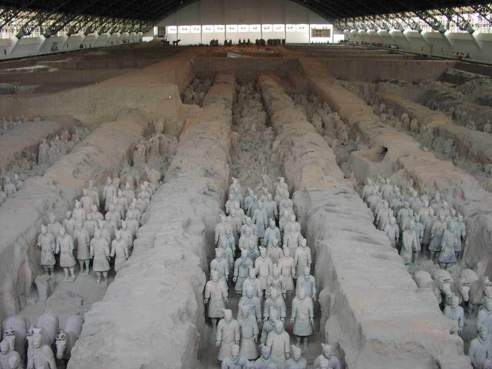
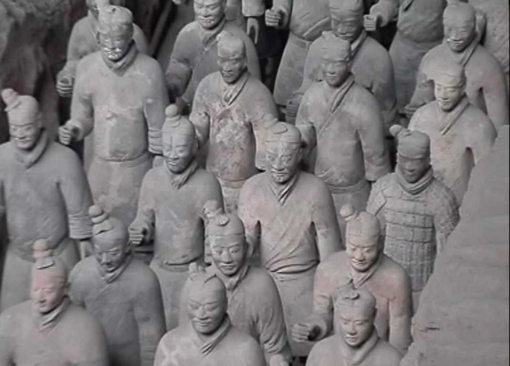

Terracotta Warriors Xi'an 西安 兵馬俑
俑とは殉死者の代わりに埋葬される人形で「始皇帝陵」から約１.５ｋｍ離れた場所で発見された 秦の始皇帝の兵馬俑は広大な中国を最初に統一した皇帝らしく常識では考えられないほどのスケールを備えその数は約６,０００体余りにもおよび兵士俑は身長１８０ｃｍ前後で身につけた鎧手に持つ武器表情などすべて異なっており馬俑ともどもその迫力とリアルさに圧倒させられた